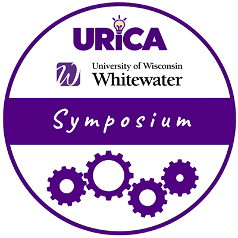

Abstract: If you encountered a drowning child and could save them, but doing so meant arriving late to an important meeting, spending the rest of the day in wet clothes, and ruining your most expensive shoes, would you stop to help? For most people, the answer is an obvious yes. Philosopher Peter Singer argues that we are not only inclined to save the child but are morally obligated to do so. This obligation stems from what is commonly referred to as the prevention principle: if we can prevent something very bad from happening without sacrificing anything of comparable moral importance, we are morally obligated to do so. Although this principle may initially appear uncontroversial, its broader implications raise difficult questions about the extent of our moral obligations. This research examines the implications of Singer's prevention principle for the legal profession, specifically the ethical responsibilities of prosecutors. While legal ethics is a widely researched area of philosophical and professional inquiry, the application of the prevention principle to prosecutorial decision-making warrants further examination. Prosecutors exercise considerable authority through prosecutorial discretion, which allows them to determine whether criminal charges should be pursued. These decisions have significant consequences not only for individuals accused of crimes but also for victims, communities, and the broader administration of justice. This research investigates the moral obligations that arise when prosecuting a case is likely to produce greater suffering than declining to prosecute. More specifically, it seeks to answer the following question: When the exercise of prosecutorial authority is likely to cause greater suffering than the underlying conduct it seeks to prevent, does a prosecutor have a moral obligation to decline prosecution? By applying Singer's prevention principle to prosecutorial discretion, this project examines the extent to which consequentialist moral obligations should inform prosecutorial decision-making.